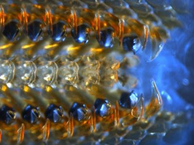

Lyle M. Gordon
 I am a doctoral candidate in the Department of Materials Science and Engineering at Northwestern University in Evanston, IL. The focus of my research is the characterization of nanoscale organic-inorganic interfaces using atom probe tomography. I am particularly interested in understanding the nature of the interaction between organic biomolecules and the inorganic mineral phase in mineralized biological tissues such as teeth and bone.
My work began with the investigation of the chiton tooth (radula with numerous teeth pictured to the right), a remarkable structure composed of the hardest known biological mineral encompassing a soft organic scaffold. I am continuing to investigate buried interfaces in tooth enamel.